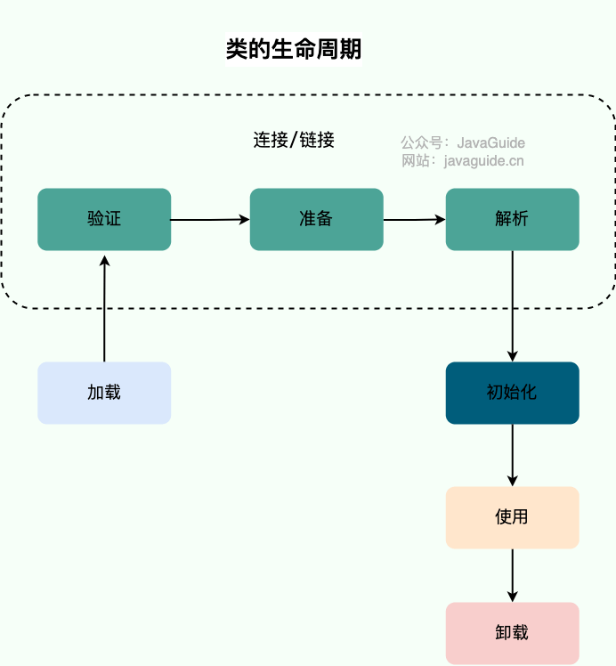
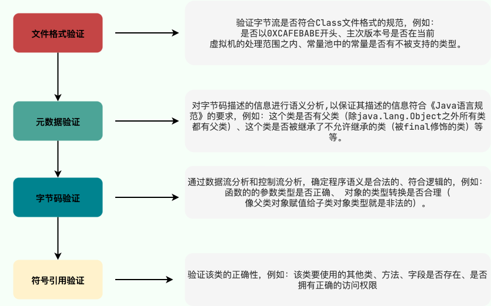
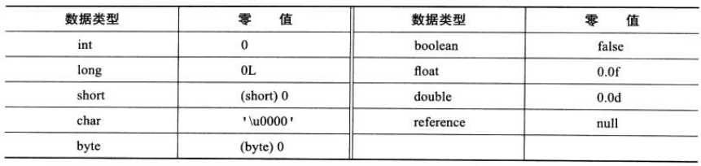
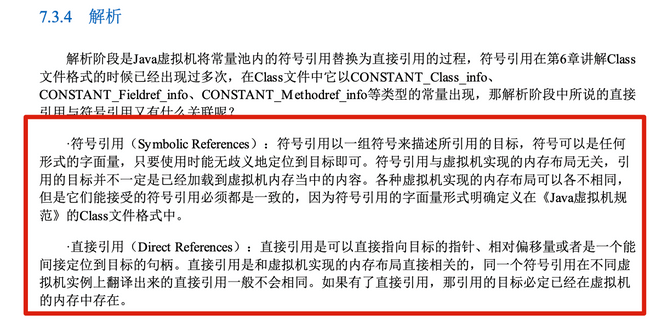

类加载过程详解
类的生命周期
类从被加载到虚拟机内存中开始到卸载出内存为止，它的整个生命周期可以简单概括为 7 个阶段：加载（Loading）、验证（Verification）、准备（Preparation）、解析（Resolution）、初始化（Initialization）、使用（Using）和卸载（Unloading）。其中，验证、准备和解析这三个阶段可以统称为连接（Linking）。
这 7 个阶段的顺序如下图所示：

类加载过程
Class 文件需要加载到虚拟机中之后才能运行和使用，那么虚拟机是如何加载这些 Class 文件呢？
系统加载 Class 类型的文件主要三步：加载->连接->初始化。连接过程又可分为三步：验证->准备->解析。

详见 Java Virtual Machine Specification - 5.3. Creation and Loading。
加载
类加载过程的第一步，主要完成下面 3 件事情：
- 通过全类名获取定义此类的二进制字节流。
- 将字节流所代表的静态存储结构转换为方法区的运行时数据结构。
- 在内存中生成一个代表该类的
Class对象，作为方法区这些数据的访问入口。
虚拟机规范上面这 3 点并不具体，因此是非常灵活的。比如：“通过全类名获取定义此类的二进制字节流” 并没有指明具体从哪里获取（ZIP、 JAR、EAR、WAR、网络、动态代理技术运行时动态生成、其他文件生成比如 JSP...）、怎样获取。
加载这一步主要是通过我们后面要讲到的 类加载器 完成的。类加载器有很多种，当我们想要加载一个类的时候，具体是哪个类加载器加载由 双亲委派模型 决定（不过，我们也能打破双亲委派模型）。
类加载器、双亲委派模型也是非常重要的知识点，这部分内容在[类加载器详解](https://javaguide.cn/java/jvm/classloader.html “类加载器详解”)这篇文章中有详细介绍到。阅读本篇文章的时候，大家知道有这么个东西就可以了。
每个非数组类或接口都由某个类加载器创建。数组类不是通过 ClassLoader 创建的，而是 JVM 在需要时自动创建；引用类型数组的定义类加载器与其组件类型的定义类加载器一致，基本类型数组的 getClassLoader() 则返回 null。
一个非数组类的加载阶段（获取类的二进制字节流的动作）可控性很强。通常可以继承 ClassLoader 并重写 findClass() 来控制字节流的获取方式，同时保留 loadClass() 实现的双亲委派流程；只有确实要改变委派规则时才需要重写 loadClass()。
加载阶段与连接阶段的部分动作（如一部分字节码文件格式验证动作）是交叉进行的，加载阶段尚未结束，连接阶段可能就已经开始了。
验证
验证是连接阶段的第一步，这一阶段的目的是确保 Class 文件的字节流中包含的信息符合《Java 虚拟机规范》的全部约束要求，保证这些信息被当作代码运行后不会危害虚拟机自身的安全。
验证阶段这一步在整个类加载过程中耗费的资源还是相对较多的，但很有必要，可以有效防止恶意代码的执行。任何时候，程序安全都是第一位。
HotSpot 曾提供 -Xverify:none 和 -noverify 来关闭大部分类验证，但这会削弱字节码安全检查，不应作为生产环境的通用优化手段。这两个选项已在 JDK 13 中被弃用，现代 JDK 还可能忽略或移除它们。
验证阶段主要由四个检验阶段组成：
- 文件格式验证（Class 文件格式检查）
- 元数据验证（字节码语义检查）
- 字节码验证（程序语义检查）
- 符号引用验证（类的正确性检查）

文件格式验证这一阶段是基于该类的二进制字节流进行的，主要目的是保证输入的字节流能正确地解析并存储于方法区之内，格式上符合描述一个 Java 类型信息的要求。除了这一阶段之外，其余三个验证阶段都是基于方法区的存储结构上进行的，不会再直接读取、操作字节流了。
方法区属于是 JVM 运行时数据区域的一块逻辑区域，是各个线程共享的内存区域。当虚拟机要使用一个类时，它需要读取并解析 Class 文件获取相关信息，再将信息存入到方法区。方法区会存储已被虚拟机加载的 类信息、字段信息、方法信息、常量、静态变量、即时编译器编译后的代码缓存等数据。
关于方法区的详细介绍，推荐阅读 [Java 内存区域详解](https://javaguide.cn/java/jvm/memory-area.html “Java 内存区域详解”) 这篇文章。
符号引用验证发生在类加载过程中的解析阶段，具体点说是 JVM 将符号引用转化为直接引用的时候（解析阶段会介绍符号引用和直接引用）。
符号引用验证的主要目的是确保解析阶段能正常执行，如果无法通过符号引用验证，JVM 会抛出异常，比如：
java.lang.IllegalAccessError：当类试图访问或修改它没有权限访问的字段，或调用它没有权限访问的方法时，抛出该异常。java.lang.NoSuchFieldError：当类试图访问或修改一个指定的对象字段，而该对象不再包含该字段时，抛出该异常。java.lang.NoSuchMethodError：当类试图访问一个指定的方法，而该方法不存在时，抛出该异常。- ……
准备
准备阶段是正式为类变量分配内存并设置类变量初始值的阶段，这些内存都将在方法区中分配。对于该阶段有以下几点需要注意：
- 这时候进行内存分配的仅包括类变量（Class Variables，即静态变量，被
static关键字修饰的变量，只与类相关，因此被称为类变量），而不包括实例变量。实例变量会在对象实例化时随着对象一块分配在 Java 堆中。 - 从概念上讲，类变量所使用的内存都应当在 方法区 中进行分配。不过有一点需要注意的是：JDK 7 之前，HotSpot 使用永久代来实现方法区的时候，实现是完全符合这种逻辑概念的。 而在 JDK 7 及之后，HotSpot 已经把原本放在永久代的字符串常量池、静态变量等移动到堆中，这个时候类变量则会随着 Class 对象一起存放在 Java 堆中。相关阅读：[《深入理解 Java 虚拟机（第 3 版）》勘误#75](https://github.com/fenixsoft/jvm_book/issues/75 “《深入理解Java虚拟机（第3版）》勘误#75”)
- 这里所设置的初始值通常是数据类型的默认零值（如 0、0L、null、false 等）。比如定义
public static int value=111，value在准备阶段通常先得到 0，在初始化阶段才赋值为 111。特殊情况是字段带有ConstantValue属性时，准备阶段会直接赋为该属性指定的值；public static final int value=111这样的编译期常量就是典型例子，但并非所有static final字段都有ConstantValue属性。
基本数据类型的零值：（图片来自《深入理解 Java 虚拟机》第 3 版 7.3.3）

解析
解析阶段是虚拟机从运行时常量池中的符号引用动态确定具体值的过程。 当前规范涉及类或接口、字段、方法、接口方法、方法类型、方法句柄、动态调用点以及动态常量等符号引用。
《深入理解 Java 虚拟机》7.3.4 节第三版对符号引用和直接引用的解释如下：

举个例子：程序调用方法时，虚拟机需要根据方法符号引用确定实际要调用的方法。HotSpot 等虚拟机可以使用方法表、入口地址或其他内部结构加速调用，但这些表示方式属于实现细节，并非《Java 虚拟机规范》统一规定的方法表偏移量。
综上，解析阶段是虚拟机根据运行时常量池中的符号引用确定类、字段、方法或动态调用点等具体目标的过程；直接引用的内部表示不一定是内存指针或固定偏移量。
初始化
初始化阶段会执行类或接口的初始化方法 <clinit>()（如果编译器生成了该方法），这是类加载过程的最后一步。
说明：编译器根据静态字段初始化表达式和静态初始化块生成
<clinit>()；如果没有需要执行的类初始化代码，Class 文件中可以不存在该方法。
JVM 会同步类或接口的初始化过程，确保同一时刻只有一个线程执行其初始化方法；这并不是说 <clinit>() 方法本身带有 Java 锁。其他线程可能在等待该类初始化完成时阻塞。
对于初始化阶段，规范列出的主要主动使用场景包括：
- 遇到
new、getstatic、putstatic或invokestatic这 4 条字节码指令时：new: 创建一个类的实例对象。getstatic、putstatic: 读取或设置一个类型的静态字段（被final修饰、已在编译期把结果放入常量池的静态字段除外）。invokestatic: 调用类的静态方法。
- 使用
java.lang.reflect包的方法对类进行反射调用时如Class.forName("..."),newInstance()等等。如果类没初始化，需要触发其初始化。 - 初始化一个类，如果其父类还未初始化，则先触发该父类的初始化。
- 当虚拟机启动时，用户需要定义一个要执行的主类 (包含
main方法的那个类)，虚拟机会先初始化这个类。 - 首次调用解析结果为
REF_getStatic、REF_putStatic、REF_invokeStatic或REF_newInvokeSpecial的MethodHandle时，需要初始化声明该目标的类或接口。 - 「补充，来自issue745」 当一个接口中定义了 JDK8 新加入的默认方法（被 default 关键字修饰的接口方法）时，如果有这个接口的实现类发生了初始化，那该接口要在其之前被初始化。
类卸载
类卸载是 JVM 回收某个类或接口的方法区表示及其关联资源的过程。根据《Java 语言规范》，类或接口只有在其定义类加载器可被垃圾回收时才可能卸载；由启动类加载器定义的类或接口不能卸载。在常见的 HotSpot 应用中，这通常发生在可回收的自定义类加载器及其定义的类上。
在 HotSpot 中判断某个类是否可能卸载时，通常可以从下面三个条件理解：
- 该类的所有的实例对象都已被 GC，也就是说堆不存在该类的实例对象。
- 该类没有在其他任何地方被引用
- 该类的类加载器的实例已被 GC
满足这些条件只表示该类具备被卸载的条件，并不保证 JVM 会立即或一定卸载它。由启动类加载器创建的类不会被卸载；由自定义类加载器创建的类则可能被卸载。
通常，JDK 自带的启动类加载器、平台类加载器和应用类加载器会随 JVM 长期存活；自定义类加载器的实例则可以变为不可达，因此由它定义的类可能具备卸载条件。JDK 9 起，原来的扩展类加载器已由平台类加载器取代。
参考
- 《深入理解 Java 虚拟机》
- 《实战 Java 虚拟机》
- Chapter 5. Loading, Linking, and Initializing - Java Virtual Machine Specification：https://docs.oracle.com/javase/specs/jvms/se8/html/jvms-5.html#jvms-5.4
写在最后
如果内容对你有帮助的话，欢迎顺手给 JavaGuide 点一个免费的 Star 支持一下：GitHub | Gitee。
JavaGuide 已持续维护近七年，累计 6100+ 次提交，来自 620+ 位贡献者共同完善。你的 Star、反馈和 PR，都是这个项目继续更新的动力。
如果你正在准备后端/AI 应用开发面试，也可以了解一下我的知识星球，里面包括后端和 AI 实战项目、简历优化、一对一提问和高频考点资料，已经持续维护六年。